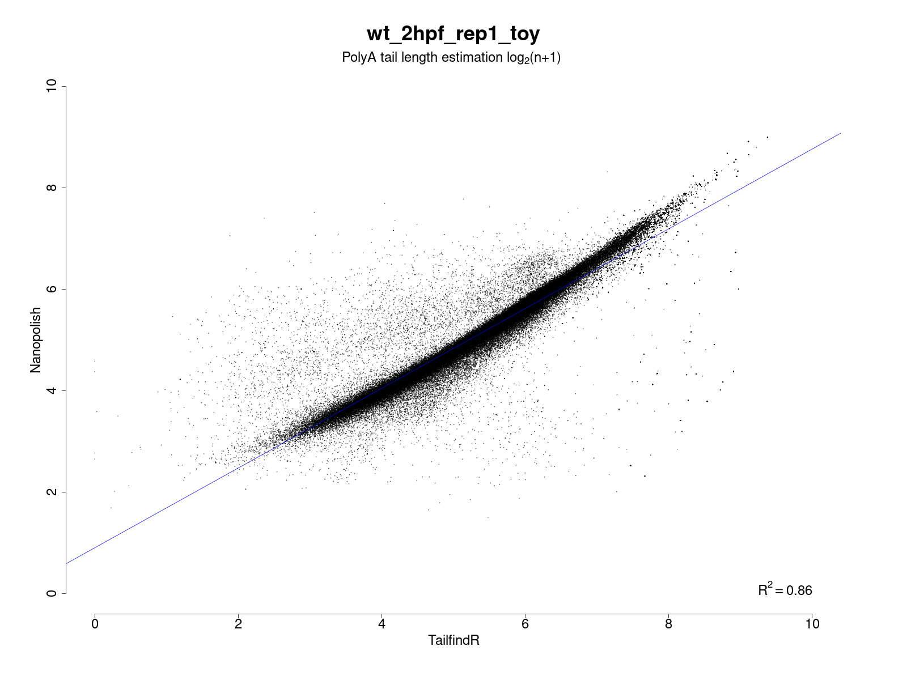

MOP_TAIL
This module takes as input the output from MOP_PREPROCESS: basecalled fast5 reads, together with their respective fastq files, alignment and assignment read ID to gene/transcript. It outputs the estimation of poly(A) tail length at read level provided by Tailfindr, Nanopolish or both.
Input Parameters
Parameter name |
Description |
|---|---|
input_path |
Output folder generated by mop_preprocess |
reference |
reference sequences |
output |
Output folder |
pars_tools |
TSV file with optional extra command line parameters for the tool indicated in the first field. |
tailfindr |
It (in)activate the corresponding flow. It can be YES or NO |
nanopolish |
It (in)activate the corresponding flow. It can be YES or NO |
Email for pipeline reporting. |
How to run the pipeline
Before launching the pipeline,user should:
Decide which containers to use - either docker or singularity [-with-docker / -with-singularity].
Fill in both params.config and tools_opt.tsv files.
To launch the pipeline, please use the following command:
nextflow run mop_tail.nf -with-singularity > log.txt
You can run the pipeline in the background adding the nextflow parameter -bg:
nextflow run mop_tail.nf -with-singularity -bg > log.txt
You can change the parameters either by changing params.config file or by feeding the parameters via command line:
nextflow run mop_tail.nf -with-singularity -bg --output test2 > log.txt
You can specify a different working directory with temporary files:
nextflow run mop_tail.nf -with-singularity -bg -w /path/working_directory > log.txt
Note
In case of errors you can troubleshoot seeing the log file (log.txt) for more details. Furthermore, if more information is needed, you can also find the working directory of the process in the file. Then, access that directory indicated by the error output and check both the .command.log and .command.err files.
Tip
Once the error has been solved or if you change a specific parameter, you can resume the execution with the Netxtlow parameter - resume (only one dash!). If there was an error, the pipeline will resume from the process that had the error and proceed with the rest. If a parameter was changed, only processes affected by this parameter will be re-run.
nextflow run mop_tail.nf -with-singularity -bg -resume > log_resumed.txt
To check whether the pipeline has been resumed properly, please check the log file. If previous correctly executed process are found as Cached, resume worked!
Results
Several folders are created by the pipeline within the output directory specified by the output parameter:
NanoPolish: contains the output of nanopolish tool.
Tailfindr: contains the output of tailfindr tool.
PolyA_final: contains the txt files with the combined results (i.e. predicted polyA sizes). Here an example of a test:
"Read name" "Tailfindr" "Nanopolish" "Gene Name"
"013a5dde-9c52-4de1-83eb-db70fb2cd130" 52.16 49.39 "YKR072C"
"01119f62-ca68-458d-aa1f-cf8c8c04cd3b" 231.64 274.28 "YDR133C"
"0154ce9c-fe6b-4ebc-bbb1-517fdc524207" 24.05 24.24 "YFL044C"
"020cde28-970d-4710-90a5-977e4b4bbc46" 41.27 56.79 "YGL238W"
If both softwares are run, an additional plot which shows the correlation of their results is generated.
Here an example of a result:
{kind=link}